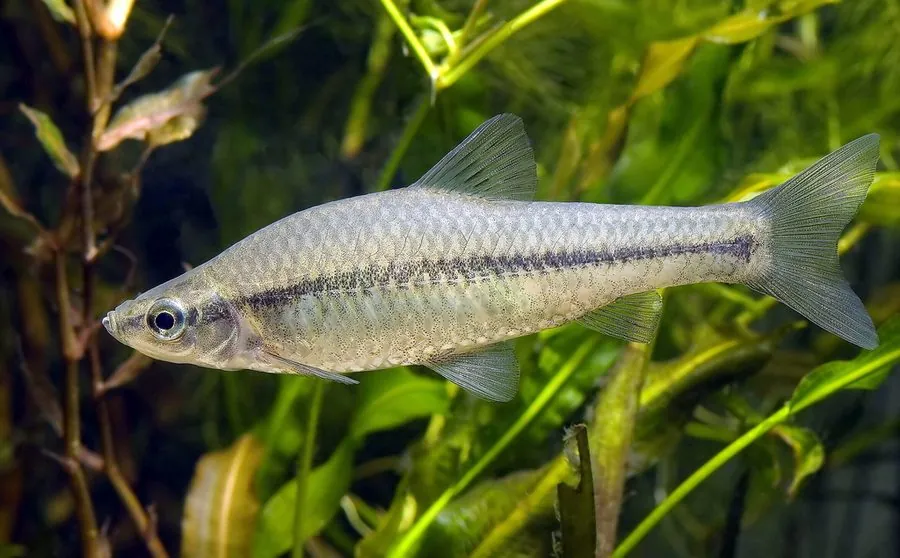

鱼类 · 动物界
麦穗鱼 Pseudorasbora parva

东亚常见的小型淡水鱼，体侧有一条黑色纵带、鳞片边缘呈黑色，适应力强，被引入欧洲后成为入侵物种。
- 分类
- 门脊索动物门纲辐鳍鱼纲目鲤形目科鲤科属麦穗鱼属
- 栖息环境
- 河流、湖泊、池塘和沟渠，适应力强，耐低氧
- 地理分布
- 东亚，包括中国、日本、朝鲜半岛和俄罗斯远东；被引入欧洲
- 保护级别
- IUCN 无危（LC）；中国未列入国家重点保护野生动物名录
物种志
麦穗鱼体呈长形，稍侧扁，头小，吻尖，口小，向上倾斜。体色背部灰褐，体侧银灰，体侧中央有一条黑色纵带，鳞片边缘黑色，形成网格状花纹。成鱼体长一般 7–10 cm，最大可达 12 cm。
麦穗鱼分布于中国、日本、朝鲜半岛和俄罗斯远东的河流、湖泊、池塘和沟渠，适应力很强，能在水质较差、溶氧较低的水体中生活。它是杂食性鱼类，吃浮游动物、昆虫幼虫、藻类和有机碎屑，繁殖期雄鱼会守护卵。麦穗鱼被引入欧洲后大量繁殖，与本土鱼类竞争食物和产卵场，还携带可感染其他鱼类的寄生虫，被列为入侵物种。目前 IUCN 评估为无危。
形态与习性
- 食性杂食性，吃浮游动物、昆虫幼虫、藻类和有机碎屑
- 体长一般 7–10 cm，最大可达 12 cm
- 外形体侧有一条黑色纵带，鳞片边缘黑色
- 适应性耐低氧和水质较差的环境
- 入侵性引入欧洲后大量繁殖，被列为入侵物种
- 繁殖雄鱼守护鱼卵，孵化期约 1 周
趣味知识
- 麦穗鱼的鳞片边缘呈黑色，体侧看起来像一张网格。
- 它被引入欧洲后迅速扩散，成为著名的入侵鱼类。
- 麦穗鱼还携带可感染其他鱼类的寄生虫，威胁本土鱼群。